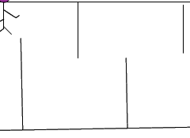

2014-2015 第二学期八年级Flash动画制作教学设计
作者：TeliuTe 来源：基础教程网
七、学会引导线动画 返回目录 下一课
（一）教学设计
1、学习目标：
2、注意事项：绕过弯来，既不要跳也不要落，一楼过了二楼
3、教学过程：
1）教师准备学案和板书；
2）学生整队进入，开机抄黑板上笔记；
3）教师讲解板书演示操作；
4）学生打指法、日志、完成操作；
5）教师打勾记录学生指法成绩，检查日志和操作；
注：学生抄完笔记就开始打指法、日志，老师讲完后再继续完成；
（二）板书设计(学生笔记)
35.7学会引导线动画
1.点插入，新建，影片，动态小人
2.返回场景，创建补间动画
3.再添加虚线引导层
4.再插入图层，画迷宫
操作图示：

（三）课后记
第7课 学会引导线动画
1.点“插入，新建，影片”，行走小人
2.返回场景，插关键帧，创建补间动画
3.添加引导层，中间虚线加号，画线瞄准
4.插入图层，画迷宫线条，拖到最下层
--
2015年04月07日 星期二 18:02
--
三个图层的动画，从效果来看都可以做出来的，
4班有几个没做出来，连着三个也没人问，都没做出来
--
分为三个图层，做的时候分清楚，容易高混淆，把线画到补间动画里了
以后要强调一下，补间动画里不能有别的东西，会干扰出问题
--
拖小人的时候，拖着脑袋，空白地方拖不成，
画动态小人时候，第二帧插入关键帧，然后用箭头工具选中后，按键盘删除键
--
画火柴棍小人，第一帧左脚，第二帧并立，第三帧右脚长
跟第一帧反一下，原来手长的手短，原来脚长的短
--
画引导线要平滑，中间不要有断点
返回目录 下一课
本教程由86团学校TeliuTe制作|著作权所有
基础教程网：http://teliute.org/
美丽的校园……
转载和引用本站内容，请保留作者和本站链接。